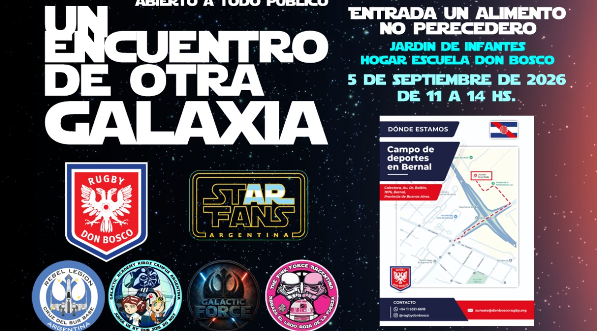
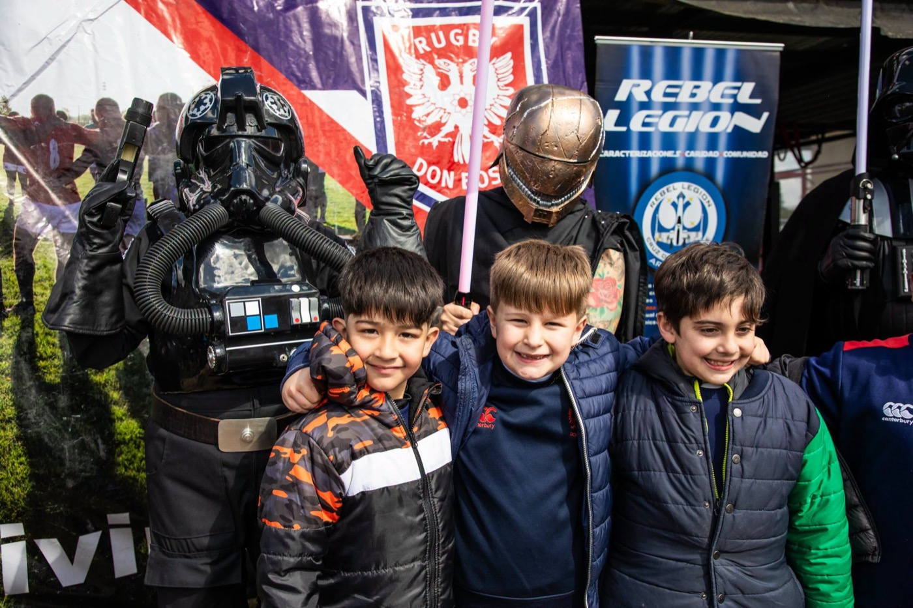
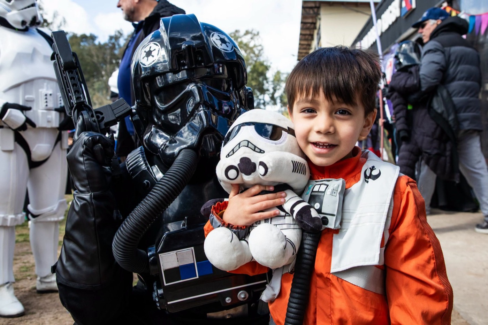
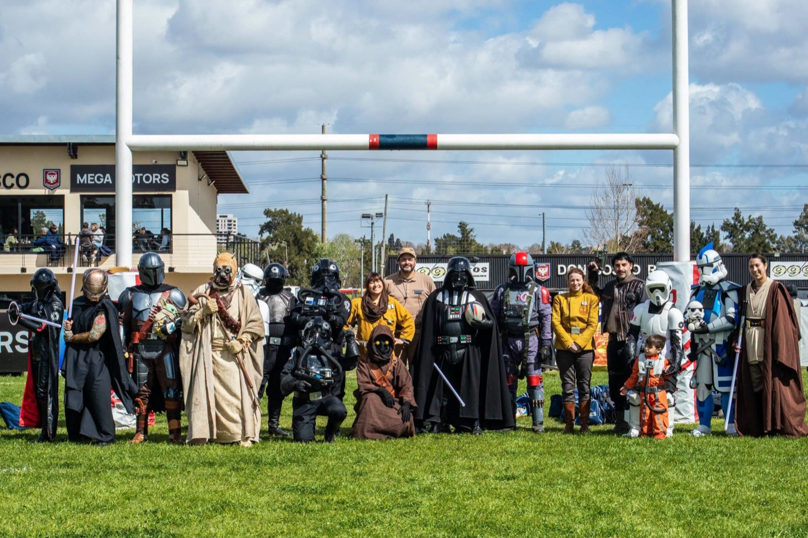
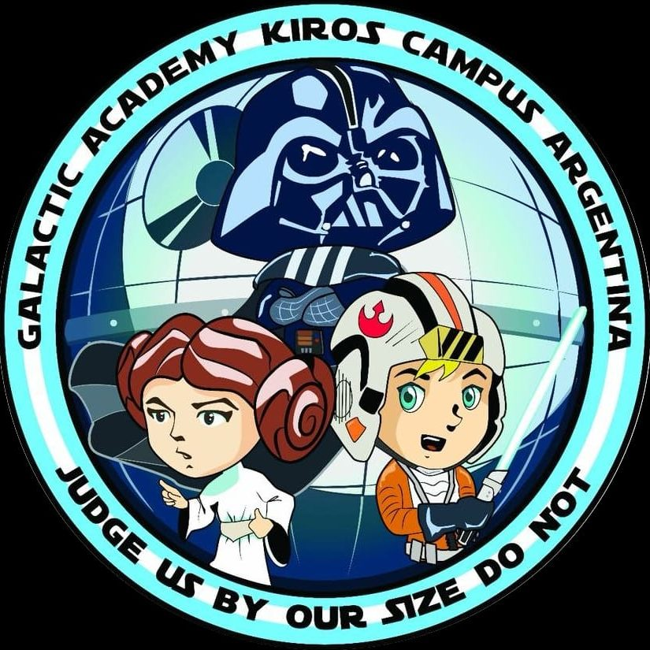
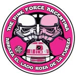
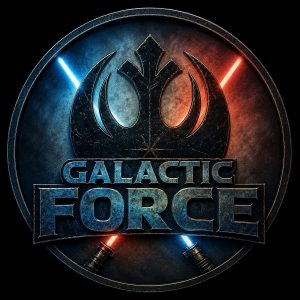
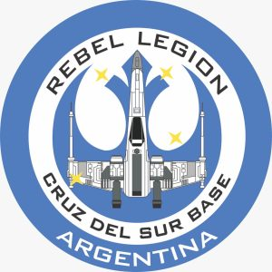
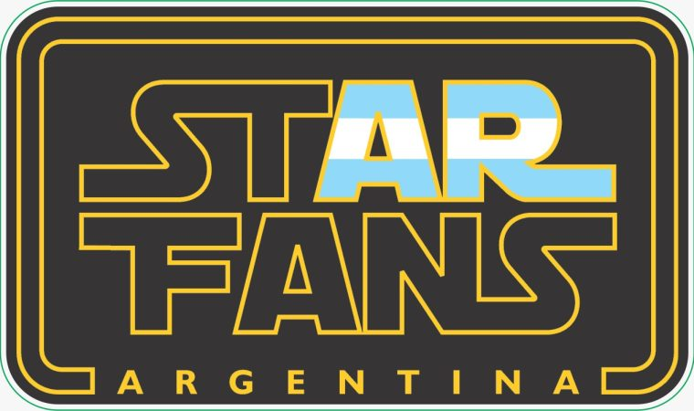

Un Encuentro de Otra Galaxia
El predio de Bernal se llenó de personajes de Star Wars, con fotos, sables de luz y una colecta solidaria para el Jardín de Infantes del Hogar Escuela Don Bosco.

El sábado 5 de septiembre, el Ateneo Cultural y Deportivo Don Bosco organizó una mañana diferente en el predio de Bernal: chicos y grandes de la comunidad compartieron horas con personajes de la saga de Star Wars mientras colaboraban con una colecta solidaria de alimentos.
Una galaxia muy, muy cercana
El encuentro, abierto a todo público, reunió a cinco agrupaciones de cosplay y fan clubs de Argentina: GA Kiros Argentina, The Pink Force Argentina, Galactic Force, Cruz del Sur Base y Star Fans Argentina. Durante tres horas, de 11 a 14, pusieron el predio de cabeza con Darth Vader, Stormtroopers, pilotos del Imperio, jedis y mandalorianos, entre muchos otros.
Los chicos se sacaron fotos, probaron sables de luz y compartieron el espacio con los integrantes de las agrupaciones, que además se sumaron al tercer tiempo del Rugby Infantil y ayudaron a servir la comida junto a las familias del club.

Una cancha, una causa
El ingreso fue libre y gratuito, con un único requisito: traer un alimento no perecedero para el Jardín de Infantes del Hogar Escuela Don Bosco, una institución de jornada completa que atiende a familias en situación de vulnerabilidad de la zona.
La directora del Jardín, Gabriela Roverano, estuvo en el predio durante el evento y se llevó las donaciones ese mismo día. Sus palabras: “Excelente colecta. Gracias de corazón por todo”.

Espacio de encuentro
Con acciones como esta, el Ateneo sigue abriendo el club para que la comunidad de Bernal lo disfrute y valore las actividades al aire libre. Cualquier excusa es buena para despegarse de las pantallas e ir a espacios de encuentro: para hacer deporte, para disfrutar al verlo o simplemente para visitarlo.

Gracias a quienes se acercaron
El Ateneo agradece a todos los que se sumaron y a las agrupaciones que hicieron posible la jornada. Las caracterizaciones, la predisposición y la buena onda de principio a fin convirtieron una mañana de rugby infantil en algo difícil de olvidar.

GA Kiros Argentina
The Pink Force Argentina
Galactic Force
Cruz del Sur Base
Star Fans Argentina
Un agradecimiento especial a Bernal TV, que siempre colabora con la difusión de nuestras actividades. Hay más fotos en Facebook (@rugby.don.bosco) e Instagram (@rugbydonbosco). Si te sacaste fotos ese día en el club, etiquetanos.